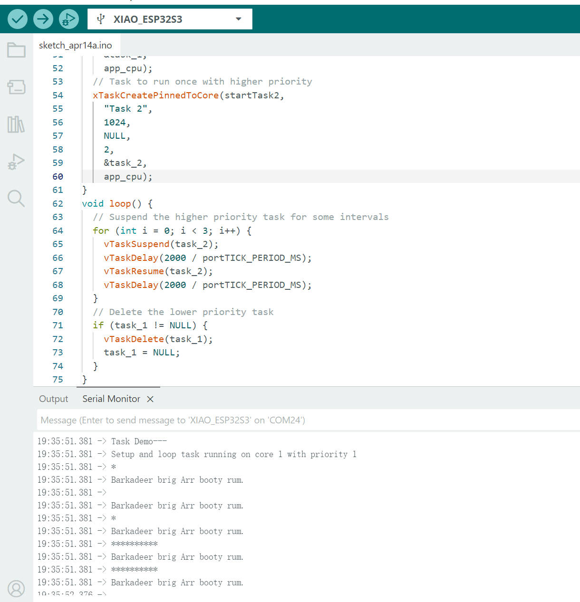
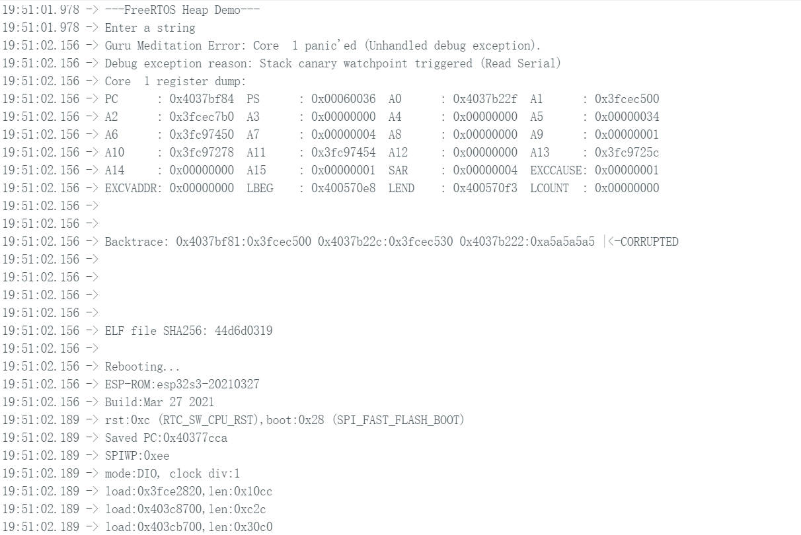
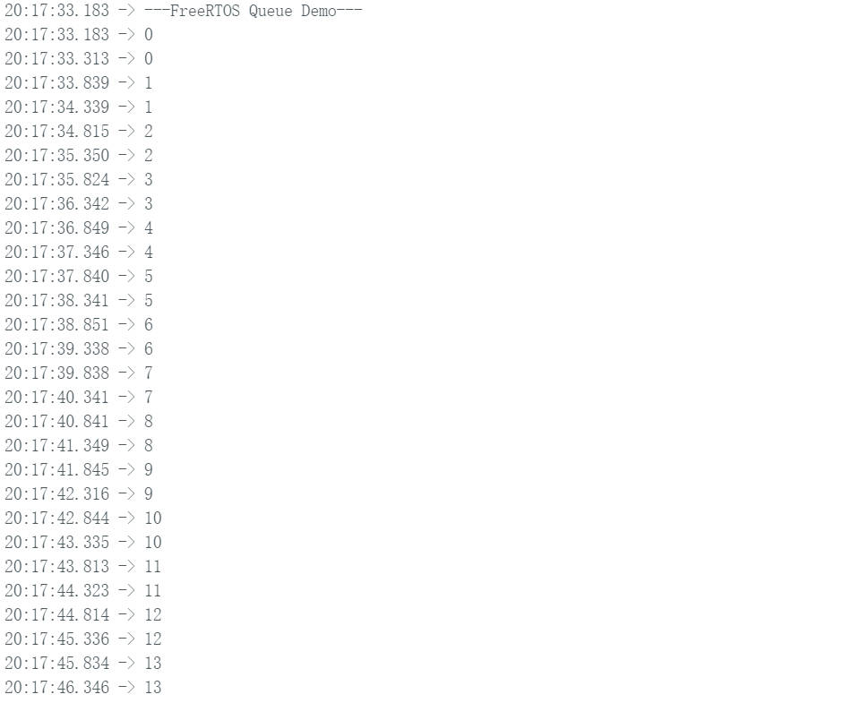
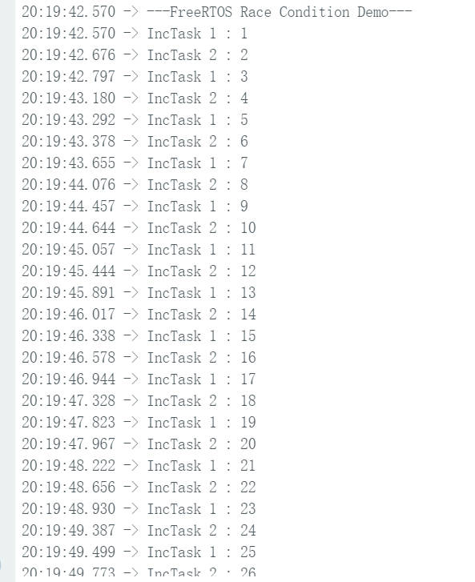

This lab mainly focus on examine how the RTOS could help in an embedded system. The first code given can flashing a LED in different thread of task as shown below.
We also implement the priority of different core on tasks, as shown in below video, we have 2 different priorities on LED flashiing rate, we can see the LED is flashing fast and slow alternatively.Then we also implement a user input flashing rate funtionality as another video.
Then the 2nd task, we implement the priority of each task, and print out the result as shown below.

The PWM signal is going to be output from a GPIO port through a resistor and transistor to DC motor. Around the DC motor, there is a diode to prevent the current from back flowing (In the vide experiment, the current still back flow to create a feedback loop that increase the speed of DC motor unstoppable). We also have 2 buttons to control the PWM duty cycle, button 1 for increase, and button 2 for decrease. Both button will trigger a interrupt to override the main loop's current duty cycle.
For task 3, I have encounter error on the code, so I am skipping this task, the error is below.

For task 4, we want to see the impact using a global variable in 2 different threads, and we can see the counting on the global variable is not consistently incremental.

For task 5, we implement Mutex, another boolean global variable that can keep track of whether the global counting variable is currently being modified by another thread. As result, we can see below that the counting now is correctly added.

For task 7, we use the code to build a local host for taking image pictures as shown in below screenshot.